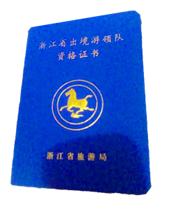

迎春桃花朵朵开
桃花坞裏桃花庵，桃花庵裏桃花仙。桃花仙人种桃树，又折花枝当酒钱。
酒醒只在花前坐，酒醉还须花下眠。花前花後日复日，酒醉酒醒年复年。
不愿鞠躬车马前，但愿老死花酒间。车尘马足贵者趣，酒盏花枝贫者缘。
若将富贵比贫贱，一在平地一在天。若将贫贱比车马，他得驱驰我得闲。
世人笑我忒风颠，我咲世人看不穿。记得五陵豪杰墓，无酒无花锄作田。
盛夏荷叶无穷碧
水光潋滟晴方好，山色空濛雨亦奇。欲把西湖比西子，淡妆浓抹总相宜。
晴天，西湖水波荡漾，在阳光照耀下，光彩熠熠，美极了。下雨时，远处的山笼罩在烟雨之中，时隐时现，眼前一片迷茫，这朦胧的景色也是非常漂亮的。如果把美丽的西湖比作美人西施，那么淡妆也好，浓妆也罢，总能很好地烘托出她的天生丽质和迷人神韵。
秋香原是桂花开

江南好，风景旧曾谙；日出江花红胜火，春来江水绿如蓝。能不忆江南？
江南忆，最忆是杭州；山寺月中寻桂子，郡亭枕上看潮头。何日更重游！
江南忆，其次忆吴宫；吴酒一杯春竹叶⑻，吴娃双舞醉芙蓉⑼。早晚复相逢！
江南的回忆，最能唤起追思的是像天堂一样的杭州：游玩灵隐寺寻找皎洁月亮中的桂子，登上郡亭 ，枕卧其上 ，欣赏那起落的钱塘江大潮。什么时候能够再次去游玩？
词以“江南忆，最忆是杭州”领起，前三字“江南忆”和第一首词的最后三字“忆江南”勾连，形成词意的连续性。后五字“最忆是杭州”又突出了作者最喜爱的一个江南城市。
凛冬到超山来看梅
宋代陆游的《卜算子·咏梅》
驿外断桥边，寂寞开无主。已是黄昏独自愁，更著风和雨。
无意苦争春，一任群芳妒。零落成泥碾作尘，只有香如故。
初级导游员考试科目
1．导游专业知识（包括政策与法规、全国导游基础知识、导游业务三部分。时间约3小时）
2．地方导游基础知识（包括本地区政治、经济、地理、文化、历史、社会和旅游等方面的知识。时间约1．5小时）
3．现场导游。外语类考生加试所报考的外语（语种包括英、日、德、法、西、俄和朝鲜等语种，时间约2小时）；
非外语类考生加试汉语言文学知识。
三类社导游考试科目为：政策与法规、导游基础知识、导游业务、现场导游和汉语言文学知识五科。
中级导游员考试科目
1.学历要求：初级导游报考同语种中级导游和初级外语导游报考中级中文（普通话）导游的，学历不限；
初级中文（普通话）导游和中级中文（普通话）导游报考中级外语导游的，需具备所报考语种大专以上学历。
2.职业经历：取得导游员资格证书满3年,或具有大专以上学历的取得导游员资格证书满2年，
并且在报考前3年内(截止到2016年6月1日，下同)实际带团不少于90个工作日，
带团工作期间表现出良好的职业道德。
3.业绩表现：报考前3年内，一次性扣分达4分以上（含4分）或一年内扣分累计达10分的导游员，
不得参加当年的中级导游员等级考试。

高级导游员等级考试
1.学历要求：具有本科及以上学历或旅游类、外语类大专学历。
2.职业经历：取得中级导游员证书满3年，并且在报考前3年内以中级导游员身份实际带团不少于90个工作日。
3.业绩表现：报考前3年内，一次性扣分达4分以上或一年内扣分累计达6分的导游员，
不得参加当年的高级导游员等级考试。
杭州导游词
作者：穆金秋
文章简介：
“东南形胜，三吴都会，钱塘自古繁华”。杭州风景如画，风情如诗，宜诗宜画，如诗如画，杭州是一座生活在诗情画意中的古老文明城市。2001年，杭州萧山跨湖桥遗址考古发现，约8000年前的新石器时代早期，杭州萧山已有人类活动。从新石器时代后期的良渚文化开始，杭州有5000多年的历史。秦王政二十五年(公元前222年)置钱唐县，属会稽郡。隋开皇九年(公元589年)始称杭州。五代时的吴越国(907年~978年)在杭建都。南宋绍兴八年(1138年)，宋高宗赵构皇帝正式定都临安，历时140余年。杭州作为曾经五代吴越国和南宋王朝建都地，因此跻身中国古代七大古都之一（西安、洛阳、南京、北京、开封、安阳、杭州）。
<-----查看详情----->
西湖导游词
作者：穆金秋
文章简介：
杭州美，美在西湖；西湖是2000多年前大约为秦汉时期由于泥沙淤积形成，因湖在杭城之西故名。西湖的美融在四季，春季柳浪闻莺，“几处早莺争暖树，谁家新燕啄春泥”；夏季曲苑风荷，“接天莲叶无穷碧，映日荷花别样红”；秋季平湖秋月，“月冷寒泉凝不流，棹歌何处泛归舟”；冬季断桥残雪，“赏雪楼台评酒价，观梅园圊订春期”。 西湖的情风花雪夜，许仙白娘子断桥重逢，梁山伯与祝英台长桥相送，岳飞精忠报国，苏小小含恨而终。泪水凝聚的西子经历了太多的悲欢离合，有着阅尽世事看透红尘的宁静淡然气质，身着柔滑清凉温润如玉的丝质锦衣，无论淡妆浓抹总是相宜。她闲适的窝在三面青山的怀抱中，看着喧嚣的闹市，赏着如织的游人。
<-----查看详情----->
杭州手工艺品
作者：穆金秋
文章简介：
 杭州的手工艺多不胜数，是名符其实的购物天堂。张小泉剪刀已有380多年历史，选用闻名的“龙泉”钢为原料，镶钢均匀，磨工精细，刀口锋利，开闭自如，刻花精巧，式样美观，经久耐用闻名中外。在一次剪刀评比会上，人们曾把40层白布叠在一起，有各种剪刀试剪，唯独张小泉剪刀，张开利嘴，咔嚓一声，一次剪断，连剪数次，次次成功。检查刃口，锋利如故，为其他剪刀望尘莫及。香港一家广播电视公司还摄取了用一号民用剪，一次剪断70层白布不缺口接着又剪单层薄绸不带丝的精彩镜头，足见其质量之高。
杭州的手工艺多不胜数，是名符其实的购物天堂。张小泉剪刀已有380多年历史，选用闻名的“龙泉”钢为原料，镶钢均匀，磨工精细，刀口锋利，开闭自如，刻花精巧，式样美观，经久耐用闻名中外。在一次剪刀评比会上，人们曾把40层白布叠在一起，有各种剪刀试剪，唯独张小泉剪刀，张开利嘴，咔嚓一声，一次剪断，连剪数次，次次成功。检查刃口，锋利如故，为其他剪刀望尘莫及。香港一家广播电视公司还摄取了用一号民用剪，一次剪断70层白布不缺口接着又剪单层薄绸不带丝的精彩镜头，足见其质量之高。
<-----查看详情----->